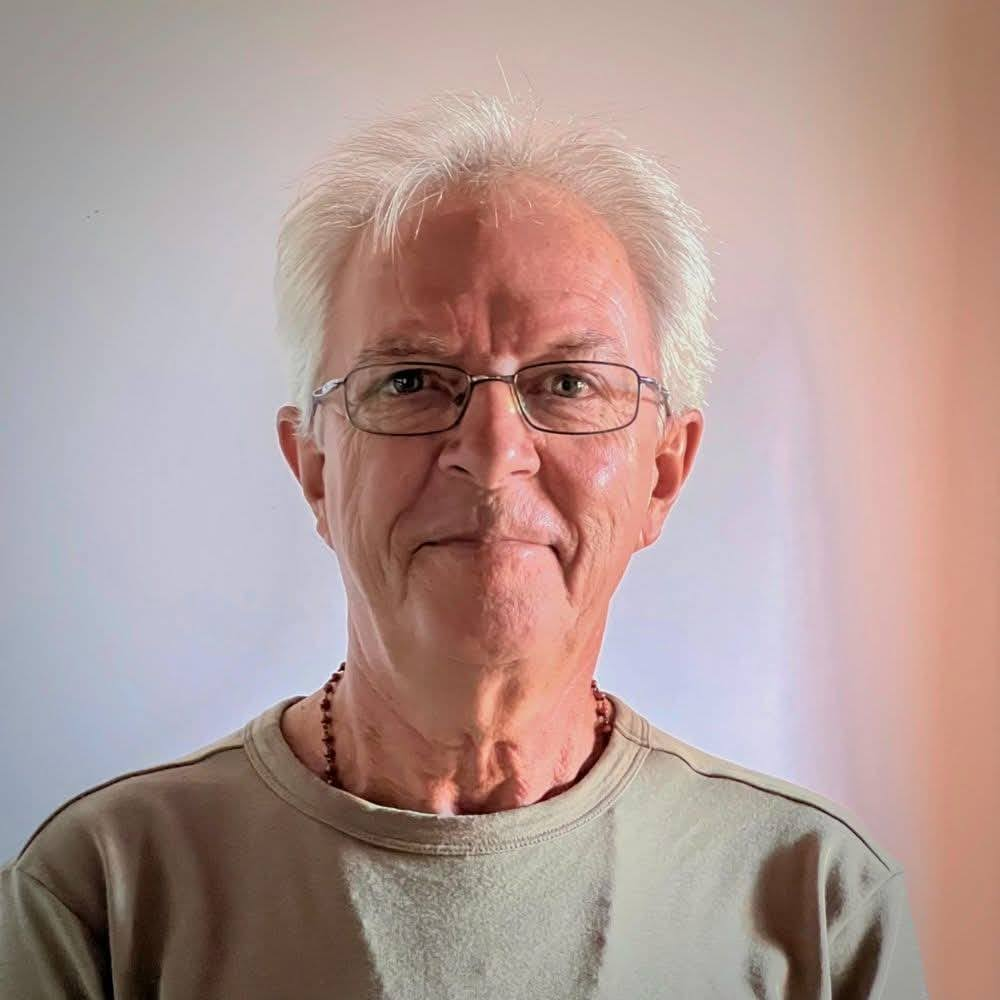

Biography
Marius Jomphe was born in Havre St-Pierre, on the North Shore.
He obtained his Bachelor of Arts from the Université du Québec à Montréal in 1976. He then taught for thirty years at the Cégep de la Gaspésie et des Îles while regularly exhibiting his work.
Since 1990, he has dedicated himself exclusively to photography. His interest in science (astrobiology, neurosciences) influences his photographic practice, which includes the territories of the Gaspé Peninsula as well as the Rivière-au-Tonnerre region on the North Shore.
He lives and works in Gaspé.
Artist's Statement
« We must remember that what we observe is not nature in itself, but nature subjected to our method of questioning. »
Perception, instead of being the passive recording of a supposed objective external reality, appears more as an active process of interpretation, elaborated by the brain, with a view to effective adaptive interaction with the world around us. Through photography, we can therefore question the nature of the visible. By forcing us to consider the profound complexity of what is seen, it can consequently open us to a whole new experience of the world.
In this sense, photographs must be like open doors where the viewer can enter the world of possibilities. Images are remarkably fleeting objects, loaded with multiple significant potentials. My intention is therefore to question and demonstrate this relativity of perception in order to point towards something greater, deeper than oneself, and thereby offer a glimpse into a little of the mystery of the world.